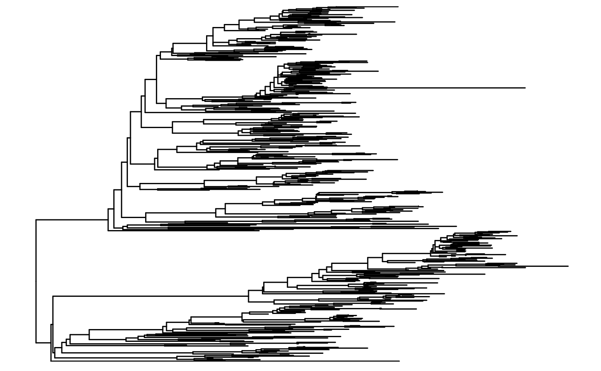
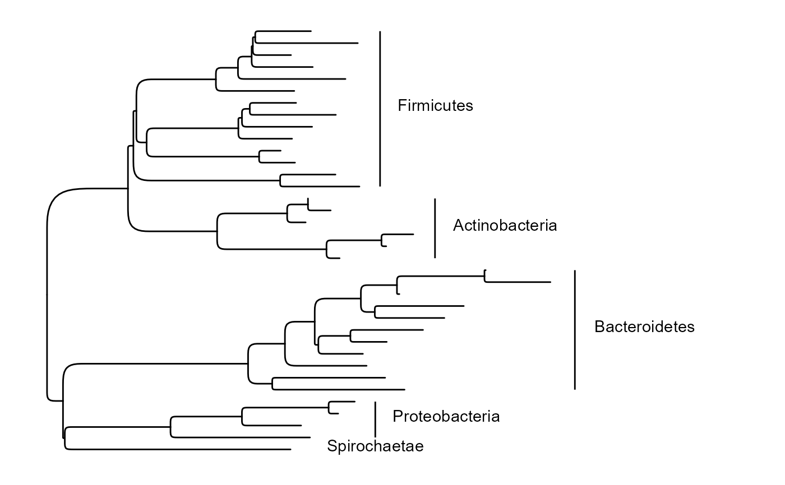

Display a dendrogram of the phylogenetic tree.
Usage
tree_plot(
biom,
layout = "rectangular",
tiplab = NULL,
color.by = NULL,
label = NULL,
cladelab = NULL,
top = NULL,
right = NULL,
bottom = NULL,
left = NULL,
...
)Arguments
- biom
A BIOM object, as returned from read_biom.
- layout
Any layout option supported by ggtree::ggtree:
"rectangular","dendrogram","slanted","ellipse","roundrect","fan","circular","inward_circular","radial","equal_angle","daylight"or"ape". Default:"rectangular".- tiplab
Label the tree leafs with taxa names. Options are
NULL(no tip labels) or a taxonomic rank (for exampletiplab = "Genus"). Default:NULL.- color.by
How to color the tree. Currently only supports the options
NULL(no coloring) or'.reads'(color by number of taxa observations). Default:NULL.- label, cladelab
Label monophyletic clades. You can specify the same or different taxonomic ranks for internal (label) and external (cladelab) annotations. Default:
NULL.- top, right, bottom, left
Add additional space around the tree. Sometimes necessary for wide text annotations. Set as fraction of tree's width/height. For instance,
right = 1reserves the right half of the plotting area for non-tree elements. Default:NULL.
See also
Other plotting:
adiv_boxplot(),
adiv_corrplot(),
bdiv_biplot(),
bdiv_boxplot(),
bdiv_heatmap(),
depths_barplot(),
plot_heatmap(),
rare_corrplot(),
rare_multiplot(),
taxa_boxplot(),
taxa_corrplot(),
taxa_heatmap(),
taxa_stacked()
Examples
library(rbiom)
tree_plot(hmp50)

hmp1 <- select(hmp50, samples = "HMP10")
tree_plot(hmp1, cladelab = "Phylum", layout = "roundrect")

tree_plot(hmp1, tiplab = "Genus", layout = "fan", color.by = ".reads")
#> Error in label_geom(mapping = structure(list(x = ~x + diff(range(x, na.rm = TRUE))/200, y = ~y, label = ~tiplab, node = ~node, subset = ~(angle < 90 | angle > 270) & isTip, angle = ~angle), class = "uneval"), hjust = 0, nudge_x = 0, stat = <environment>, data = structure(function (x) { subset(x, !is.na(tiplab)) }, display = "function(x) { subset(x, !is.na(tiplab)) }")): Problem while computing layer data.
#> ℹ Error occurred in the 3rd layer.
#> Caused by error:
#> ! object 'tiplab' not found